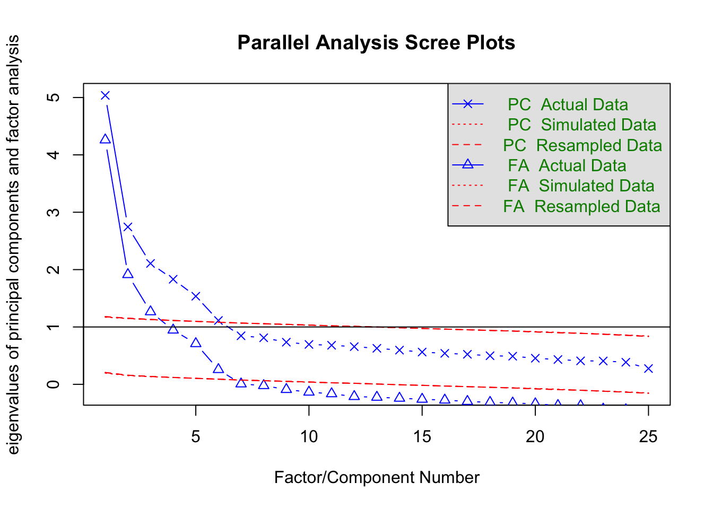
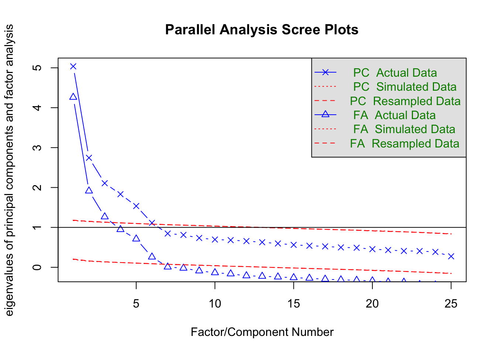

pacman::p_load(tidyverse, psych)
dat <- psych::bfi |> select(-gender, -education, -age)
# 並行分析
fa.parallel(dat)
Parallel analysis suggests that the number of factors = 6 and the number of components = 6 ここでは心理系で最もよく使われる分析法のひとつ，因子分析を中心に多変量解析の全体的な解説を行う。
多変量解析はその名のとおり，変数が多く含まれるデータの解析であり，その目的は情報の要約にある。多くの変数が含まれる時にひとつ一つの変数を解釈していくのは大変な労力であるから，要領よくまとめることができればそれに越したことはないからである。 この目的から派生して，多変量解析にはさまざまな意味解釈が付随する。以下にモデルの解釈と対応する多変量解析技術を列記してみた。
これらのモデルに共通する本質的な特徴は「変数間関係をデータから見出すこと」である。変数間関係をどのようなもので表現するかによって，多少モデルの扱い方は変化する。一般的には分散共分散(相関係数)を変数間関係とするが，この場合は間隔尺度水準以上のデータが得られていることが必要になる。もし順序尺度水準でしか得られていないのであれば，ピアソンの相関係数の代わりにポリコリック相関係数やポリシリアル相関係数と呼ばれる相関係数を用いることになる。0/1のバイナリデータの場合はさらに特殊で，ピアソンの相関係数の代わりにテトラコリック相関係数を用いることになる。
変数間関係は必ずしも相関係数だけではない。カテゴリカル変数の場合は，あるカテゴリと他のカテゴリが同時に選択される・発生する頻度(共頻関係)を，その変数間関係の指標として捉えることができる。共頻関係を分析する手法としては双対尺度法(西里 2010) (対応分析や数量化III類と原理的に同じ)などが知られている。このようなカテゴリデータの分析は，自由記述などの自然言語を形態素解析し，多変量解析で分析するテキストマイニングなどで応用されている。
また，変数間関係を変数同士の類似度，すなわち距離であると考えることもできる。距離の公理を満たすデータがあれば，それを元に多次元尺度構成法(高根 1980; 岡太 and 今泉 1994)で可視化したり，クラスター分析で分類(新納 2007; 足立 2006)したりすることができる。
さらに，相関係数は変数間の直線的な関係の強さを意味するが，隠れた変数による擬似相関の可能性も含まれるため，偏相関係数を使って周囲の変数からの影響を統制した変数間関係を考えることもある。この手法はグラフィカルモデリング(宮川 1997)やネットワーク分析(アデラ＝マリア et al. [2022] 2024)で用いられるものである。
いずれにせよ，こうした変数間関係をもとに，外的な基準があればそこに対するフィッティングを目的として未知数を推定するし，外的な基準がなければモデル的仮定に基づいてデータから構造化していくことになる。またその目的の基本は情報の要約であるが，可視化に重点をおいたモデルや潜在得点の推定に重点を置いたモデルなど，各種モデルによって得意とする場所や理論的に強調されるところは異なる。
やや本筋から外れるが，こうした多変量を同時に扱うための数学的基盤として，線型代数の知識が必要となることが少なくない。線型代数はベクトルや行列の演算体系であり，その利点は「計算」と「可視化」を統合する観点を得られるところにある。より深く理解したいものにとっては，これらの学習も合わせて行うことを期待する。
Cattel.R.Bは共変図covariation chart，あるいはdata cubeと呼ばれる図を描いてデータの分類をしている。彼は，どんな観察あるいは測定事象でも，
の3つの属性で規定できるとしている。
心理学におけるデータというと，行に人，列に変数のある2次元行列(あるいは表計算ソフトのスプレッドシートと言えばいいだろうか)を想定するが，それはデータの時間軸でカットした一時点のものである。しかしこのキューブは他の軸でも断面を切り出すことができるし，行・列の入れ替えを考えると6種類の共変動を計算できる。
| R | Q | O | P | S | T | |
|---|---|---|---|---|---|---|
| 技法 | 変数\(\times\)人 | 人\(\times\)人 | 時・所\(\times\)時・所 | 人\(\times\)時・所 | 時・所\(\times\)変数 | 変数\(\times\)時・所 |
| 実験計画 | 変数\(\times\)人 | 人\(\times\)時・所 | 時・所\(\times\)変数 | 変数\(\times\)時・所 | 人\(\times\)変数 | 時・所\(\times\)人 |
| 共変動(取り出す因子) | 変数 | 人 | 時・所 | 人 | 時・所 | 変数 |
Cattelは各段面における因子分析を「technique」として分類した。一般的な因子分析は，変数と人の組み合わせから，変数同士の相関行列を計算して変数の背後にある因子を抽出する。これはR技法である。これに対し，人と人の相関行列を計算して，人因子を抽出することもできる。これはQ技法として知られている。あるいは，人と時間・場所の断面で切り出して，時間の因子を出すこともできるし(O技法)，この面から見た人の因子を取り出しても良い(P技法)。同様に，S技法，T技法を考えることもできる。S技法を用いた実践例は確認されていないが，それ以外の方法についてはそれぞれ対応する研究もわずかながら存在する。
変数間関係は距離行列(類似度行列)でもいいし，共頻関係でも良い。例えば距離行列を使って変数をクラスター分析で分類しても良いし，人を分類しても良い。どの共変動，どの側面で分析するかは損外自由なのである。
昨今では3次元という制約を外してデータキューブを一般化し，含まれるデータの種類(相mode) とその組み合わせ回数(元way)で分類する。例えば，ある集団においてメンバーが相互に評定し合うデータを，複数の集団に対して取るとすると，含まれるデータはメンバーと集団の2種類で，メンバー\(\times\)メンバーの関係が並ぶので，2相3元データ(2-mode 3-way data)などと呼ぶ。家族システム論ではこうしたデータを扱うことになる。
多変量解析はこのように，どの組み合わせにおいて，どの側面からアプローチするか，またどの要素を要約するかといったということを考える一般的な技法なのである。繰り返すが，「この側面で切り取ってはいけない」といった制約はなく，分析者はデータの全体像をイメージしながら，実践的に意味のある側面で自由に切り取ると良い。それができるような数学的・統計的モデル上の制約はなく，Rをはじめとするパッケージを駆使すればいかなる分析も可能である。
多変量解析の全体像を俯瞰したところで，心理学で最も愛されてよく使われている因子分析について詳しく見ていくことにしよう。
ここでは心理学で最もよく用いられる手法の一つである，因子分析法について概説する。 因子分析法は測定についての統計モデルである。類似の手法として主成分分析があげられるが，主成分分析は測定のモデルというより要約のモデルというべきである。
因子分析のモデルは次の式で表される。 \[ z_{ij} = a_{j1}f_{i1}+a_{j2}f_{i2}+\cdots+a_{jm}f_{im}+d_jU_{ij} \]
ここで\(z_{ij}\)は個人\(i\)の項目\(j\)に対するスコアを標準化したものである。\(a_{j.}\)は項目\(j\)の因子負荷量(factor loadings)，\(f_{i.}\)は個人\(i\)の因子得点(factor score)，\(d_j\)は項目\(j\)の独自因子負荷量，\(U_{ij}\)は項目\(j\)に伴う個人\(i\)の独自因子得点である。\(a_{j.}\)で表される\(m\)個の因子を共通因子と呼ぶ。一般に\(m\)は項目数\(M\)よりもかなり小さい。例えば性格検査のBIG-fiveは\(M=25\)で\(m=5\)である。YG正確検査は\(M=120\)で\(m=12\)である。この意味で多変量解析の目的の一つ，情報圧縮のモデルであるということもできる。
これに対して主成分分析は次のように表される。 \[ P_{i} = w_1X_{i1} + w_2X_{i2} + \cdots + w_MX_{iM} \]
ここで\(X_{i.}\)は個人\(i\)の項目\(j\)に対する反応を表し，この重み付き線型結合で主成分\(P\)を形成する。ここでの未知数は\(w_j\)であるから，一つの合成変数に作るための最適な重みを見つけることが目的となる。その基準の一つが，生成される合成変数\(P\)が個人\(i\)の特徴を最大限際立たせるように，すなわち\(P_i\)の分散を最大にすることと考える。もちろん一つの合成変数で\(M\)個の変数が持つ情報をすべて反映させることは難しいので，第二，第三の合成得点(主成分)を作ることも可能である。
そうすると，情報圧縮という観点から見た\(m\)個の共通因子，\(m\)個の主成分の違いは何だろうか。これはすでに述べたように，因子分析は測定のモデルなので，得られたデータ\(z_{ij}=\frac{X_{ij}-\bar{X_j}}{\sigma_j}\)には誤差\(d_jU_{ij}\)が含まれていると考えているのに対し，主成分分析では\(X_{ij}\)にそれを仮定せず，得られた値をそのまま用いているところが異なる。
実践的な面では，心理尺度のような反応に誤差が仮定されるものには因子分析を用い，公的な記録など値に誤差が想定されないものには主成分分析を用いることが相応しい。因子分析が心理学やテスト理論の領域で広まり，主成分分析が経済学，商学，社会学の領域で広まったのはそうした背景による。
計算論的には，いずれも変数間関係を元に最大限説明できる要素を抽出するというところで，行列の固有値分解を用いるという点が同じであるから，統計パッケージによっては同じメニューで異なる出力になっているものも少なくない。しかし上で述べたように，モデルの設計上の違いがあることは知っておいて損はないだろう。また，因子分析は変数間関係として相関行列を，主成分分析は分散共分散行列を用いることが多い。これは因子分析を用いる心理学的な領域では，測定値に絶対的な意味がなく相対的な意味(ex.より外向的，より内向的)しかないことに対し，他の社会科学領域では絶対的な意味がある(ex.国家間の貿易黒字・赤字の額など)場合が多いからである。また，主成分分析は多くの変数を情報圧縮する目的で第一主成分のみに注目することが多いのに対し，因子分析は測定しているものの考え方から複数の因子を考えることが多い。因子分析において単因子で考えるか多因子で考えるかについては，知能検査において知能を一般的な単一の因子で考えるのか，各領域に対応する複数の因子があるのかといった，理論的な相違がその黎明期にみられたことを反映している。
類似の手法ではあるが，こうした背景を知っておくことで適切な手法を用いることができるようになるだろう。
特に断りなく単に因子分析というとき，探索的因子分析(Exploratory Factor Analysis)を指すことが多い。探索的というのは，因子負荷量(因子から項目へのパス係数，因子と項目の関係の強さを反映したもの)はもちろん共通因子の数についても事前に定めず，データから因子構造を探ることを目的とするものだからである。
探索的因子分析は次のステップで進められる。
もちろん分析に入る前に，分析対象となるデータの記述統計や可視化を通じて基本的な項目属性を把握していることが前提である。
因子分析を数学的に語れば，\(M\)個の項目相互の相関係数を表した相関行列\(\mathbb{R}\)を固有値分解することに尽きる。相関係数はピアソンの積率相関係数を用いることが一般的であるが，項目が順序尺度水準であるとかバイナリ変数であるとかいった場合は，それに応じた相応しい相関係数を用いる。
固有値分解とは相関行列の次元性を見ることでもある。\(M\)個の項目もつ情報は\(M\)次元あると考える。例えば2変数\(X,Y\)があれば，変数\(X\)をx軸，変数\(Y\)をy軸に取った2次元空間に核反応をプロットすることでデータ全体の関係を表現できるだろう。しかしこれらの二変数が相関しているなら，変数\(X,Y\)を直交させた空間で表現する必要は必ずしもなく，より分散の大きくとれる二次元基底を見つけることができるに違いない。これが因子分析，主成分分析に共通する考え方であり，最大の分散を持つ次元に注目するのが主成分分析，多次元のなかで有用な次元を共通因子，それ以外を誤差因子と区別して多因子(多次元)で考えるのが因子分析である。
ここで共通因子の数を決めるのは分析者であり，「有用な次元」の決定は主観的な側面を含むことに注意しよう。もちろんデータの構造から適した次元数を考える手法はいろいろ提案されており，昨今はより客観的基準で因子数を決定するのが一般的であるが，数学的な特徴から実践的な意味合いをもつ共通次元とみなすのは，あくまでも分析者の責任において行われるものである。
因子数を決定する手法として，スクリープロットをつかった平行分析がある。 次のコードを見ながら具体的に見ていこう。分析にはpsychパッケージを用い，データはpsychパッケージの持つサンプルデータ，bfiを用いる。 これは性格テストのビッグファイブ因子それぞれについて5項目で測定したデータである。
pacman::p_load(tidyverse, psych)
dat <- psych::bfi |> select(-gender, -education, -age)
# 並行分析
fa.parallel(dat)
Parallel analysis suggests that the number of factors = 6 and the number of components = 6 データ行列から得られる固有値の大きい順に折れ線グラフを描いたものを，スクリープロットという。 デフォルトではPCすなわち主成分分析Principle Component Analysisのスクリープロットと，FAすなわち因子分析Factor Analysisのスクリープロットが表示されている。この違いは上で述べたように，データに誤差を仮定するかどうかの違いにある。因子分析はこれを仮定するため1つの項目のもつ情報量が1単位以下になる(相関係数\(r_{jj}\)が\(1.0\)より小さくなる。正確には，\(r_{jj} = 1-h_j^2 = u^2 < 0\)であり，ここで\(h_j^2\)は共通性と呼ばれる共通因子負荷量の二乗和，\(u_j^2\)は独自性因子負荷量の二乗和)ため，主成分分析のそれより必ず低くなる。
プロットされているのはActual Data, Simulated Data, Resmapled Dataとなっているのがわかるだろう。実際のデータは何らかの意味構造を有しているだろうから，その相関関係にも偏りが生じ，よく説明できる次元とそうでない次元とが生まれるため，徐々に減衰するカーブで表示される。これに対してSimulated Dataは同じサイズの乱数データから，Resampled Dataは実際のデータをごちゃ混ぜにした行列を作って得られた固有値構造を表している。乱数や撹拌したデータは実際の意味構造を持たず，どの次元も均等に無意味になるため，フラットな線で表示されるだろう。このフラットな線と実データの線を比べ，フラットなラインよりも大きな意味がある次元は無意味ではない，と考えて因子数を決めるのが平行分析の考え方である。この考え方に基づくと，因子分析解も主成分分析解も6因子(6成分)がてきせつであるということになる。
なお図中には固有値が1.0のところにもラインが引かれている。これはかつて使われていたガットマン基準というもので，項目1つ分の分散も持たないような因子は共通因子たり得ない，という考え方である。この考え方によると3因子が妥当ということになる。ただし判断の基準として，共通因子で分散全体の何%を説明したか，というのもあり，たとえば3因子までで50%も説明しないようであれば半分以上の情報を捨てることになるから，4，5因子まで採用するという考え方もあり得る。
因子の数が決まると，その過程のもとで因子負荷量の推定に入る。例えば次のようにして結果を得る。
result.fa <- fa(dat, nfactors = 6, fm = "ML", rotate = "geominQ")要求されたパッケージ GPArotation をロード中ですpsychパッケージのfa関数は実に多くのオプションを持っているが，ここでは因子数(nfactors)，推定法(fm)，回転法(rotate)の3つを指定した。 因子数はすでに述べたので，推定法と回転法について解説する。
推定法は，ここでは最尤法(ML)を指定した。サンプルサイズが200を超えるような大きなデータであれば，多変量正規分布のもとからデータが得られたと仮定して因子負荷量を推定するのが最も適切だろう。サンプルサイズが小さい場合は，最小二乗法系列(ULS,OLS,WLS,GLSなど)の推定法を指定し，データとモデルのずれを最も小さくするような手法にするのが良い。特段の指定がなければ最小残差法(minres)が選ばれる。これは最小二乗法と同じだが，アルゴリズムが改善されていて収束しやすいという特徴がある。推定法として主成分解(pa)を選べば，残差を推定しないモデルとなる。アルゴリズムの違い，仮定の違いなどでいろいろ変えうるが，基本的にこれで大きく変化が出るようなものではない。
回転法は因子負荷量を推定した後で，さらに解釈をしやすくするためのものである。因子分析や主成分分析は，データの持ってる空間的特徴の軸を見つけ直すという説明はすでにした通りだが，この軸は原点こそ決まっているが，線型代数的変換によって軸を任意の方向に回転させることができる。であれば最も解釈がやりやすい方向に回転させるのが実践上便利である。この解釈がやりやすい方向というのを数学的に言い換えるならば，一つは項目と因子の関係が単純構造にあることだろう。単純構造とは，ある項目が特定の因子に寄与しているのなら，そのほかの因子には寄与していないということである。例えば，外向性を測定する項目が第1因子に重く負荷しているのであれば，第2,3,4,5因子には負荷していないほうが解釈しやすい。因子はデータの空間的特徴を表す軸(次元)なのだから，事後的にその軸がの意味であったかを考察する必要があるので，「この因子はこの項目にもあの項目にも影響している」という状況は悩みの種だからである。
この基本方針のもと，いくつかの計算法が考えられている。もっとも古典的なバリマックス回転は，因子負荷量の二乗和の分散が最大になるように回転角を定める。ほかにも，オブリミン回転やジオミン回転などさまざまな回転方法が考えられており，これらについて詳しくは 小杉 (2018) などを参照されたい。 また，回転方法は大きく分けて斜交回転と直交回転とに分けられる。直交回転は回転後の軸が直交する，すなわち因子間相関を仮定しない方法であり，斜交回転は因子間相関を仮定する回転方法である。後者の方が数学的な仮定が緩いため，分析の手順としてはまず斜交回転を行い，因子間相関が十分にひくく直交をかていできるなら直交回転をやり直す，という方法をとるべきである。ちなみにここではgeominQというジオミン回転の斜交版を適用して結果を出力している。
Bernaards and Jennrich (2005) パッケージには多くの回転法が含まれており，回転法をrotateオプションで選択することができるので，ヘルプなどを見て理解を深めて欲しい。
因子軸の回転についても，推定法と同じように絶対的な基準はなく，それぞれの考え方や仮定に基づくアルゴリズムの違いがあるだけである。推定法と違って，因子負荷量は異なる回転法を施すと大きく変わることがある。因子軸の回転は解釈を容易にするためのものであるから，分析者にとって都合の良い回転方法を指定していいが，その回転方法が何で，どういう仮定があるのかについては，自身の言葉で説明できるようになっていた方がいい。
推定法，回転法についての概略を踏まえた上で，結果を見てみよう。
print(result.fa, sort = T, cut = 0.3)Factor Analysis using method = ml
Call: fa(r = dat, nfactors = 6, rotate = "geominQ", fm = "ML")
Standardized loadings (pattern matrix) based upon correlation matrix
item ML1 ML2 ML5 ML3 ML4 ML6 h2 u2 com
E2 12 0.70 0.55 0.45 1.0
E1 11 0.58 0.39 0.61 1.4
N4 19 0.51 0.35 0.48 0.52 2.0
E4 14 -0.50 0.33 0.56 0.44 2.2
E5 15 -0.41 0.40 0.60 2.8
N2 17 0.84 0.69 0.31 1.1
N1 16 0.83 0.71 0.29 1.1
N3 18 0.61 0.52 0.48 1.3
N5 20 0.33 0.37 0.34 0.66 2.8
A2 2 0.70 0.50 0.50 1.2
A3 3 0.65 0.51 0.49 1.1
A1 1 -0.57 0.37 0.33 0.67 1.8
A5 5 0.50 0.48 0.52 1.7
A4 4 0.42 0.28 0.72 1.7
C2 7 0.67 0.50 0.50 1.2
C4 9 -0.60 0.35 0.55 0.45 1.9
C3 8 0.54 0.31 0.69 1.1
C1 6 0.53 0.35 0.65 1.4
C5 10 -0.51 0.43 0.57 1.8
O3 23 0.67 0.48 0.52 1.0
O1 21 0.58 0.34 0.66 1.1
O5 25 -0.49 0.41 0.37 0.63 2.0
O2 22 -0.40 0.34 0.29 0.71 2.3
O4 24 0.40 0.40 0.25 0.75 2.4
E3 13 0.38 0.48 0.52 3.0
ML1 ML2 ML5 ML3 ML4 ML6
SS loadings 2.34 2.25 2.00 1.89 1.77 0.82
Proportion Var 0.09 0.09 0.08 0.08 0.07 0.03
Cumulative Var 0.09 0.18 0.26 0.34 0.41 0.44
Proportion Explained 0.21 0.20 0.18 0.17 0.16 0.07
Cumulative Proportion 0.21 0.41 0.59 0.77 0.93 1.00
With factor correlations of
ML1 ML2 ML5 ML3 ML4 ML6
ML1 1.00 0.24 -0.36 -0.20 -0.28 -0.08
ML2 0.24 1.00 -0.01 -0.12 0.05 0.25
ML5 -0.36 -0.01 1.00 0.19 0.28 0.26
ML3 -0.20 -0.12 0.19 1.00 0.14 0.04
ML4 -0.28 0.05 0.28 0.14 1.00 0.11
ML6 -0.08 0.25 0.26 0.04 0.11 1.00
Mean item complexity = 1.7
Test of the hypothesis that 6 factors are sufficient.
df null model = 300 with the objective function = 7.23 with Chi Square = 20163.79
df of the model are 165 and the objective function was 0.36
The root mean square of the residuals (RMSR) is 0.02
The df corrected root mean square of the residuals is 0.03
The harmonic n.obs is 2762 with the empirical chi square 661.28 with prob < 1.4e-60
The total n.obs was 2800 with Likelihood Chi Square = 1013.79 with prob < 4.6e-122
Tucker Lewis Index of factoring reliability = 0.922
RMSEA index = 0.043 and the 90 % confidence intervals are 0.04 0.045
BIC = -295.88
Fit based upon off diagonal values = 0.99
Measures of factor score adequacy
ML1 ML2 ML5 ML3 ML4 ML6
Correlation of (regression) scores with factors 0.90 0.93 0.89 0.87 0.86 0.78
Multiple R square of scores with factors 0.81 0.86 0.78 0.76 0.75 0.61
Minimum correlation of possible factor scores 0.61 0.72 0.57 0.53 0.49 0.22この出力ではsortオプションとcutオプションを指定した。sortオプションは因子負荷量の大きい順に並べ替えてくれるものであり，cutオプションは因子負荷量の表示を抑制するものである。あくまで表示上のオプションであり，実際は各因子から各項目へのパス(\(5 \times 25\)本)が計算されている。
まず表示されているのが因子負荷行列であり，項目の因子ごとの負荷量に加え，共通性\(h_j^2\)と独自性\(u_j^2=1-h_j^2\)，複雑度complexityが示されている1。なお，ここで表示されている因子負荷量などは回転後のパターン行列であり，斜交回転の場合は，因子軸の負荷量をどう考えるかによって因子パターンと因子構造とに分かれる。因子パターンは変数を斜交座標系に直交に投影した影のようなものであり，変数から因子への直接的な効果を表すと考えられる。因子構造は因子構造は変数を各因子軸に平行に投影した影のようなものであり，変数と因子の間の単純相関を表している。
その下には負荷量の平方和SS loagingsがあり，これが説明する分散の大きさである。それを比率にしたもの(Proportion Var)，累積比率にしたもの(Cumulative Var)がある。今回は累積して44%の説明しかしていないことになるから，56%もの情報をカットしているので，情報圧縮の観点から言えば少し捨てすぎている危険性もある。
続いて，回転行列に斜交回転を指定しているから，因子間相関が出力されている。これを見ると絶対値最大で-0.36がみられる。全ての因子間相関が\(\pm 0.3\)に収まるようであれば，直交回転を考えても良い。
その後に出力されているのは適合度に関する指標である。各指標に関する解説は割愛する。
ここまでで因子と項目の関係を探索的に求める方法について見てきたが，心理学的な研究としては因子と回答者の関係についても興味関心をもつだろう。すなわち，「外向性が高い人は誰か」「情緒不安定性が低い人はどういう特徴を持つか」といった，人に対する理解を深めることである。
数学的には，行列の固有値分解のときに固有値と同時にえらえる固有ベクトルが因子負荷量になる。この相関行列などを構成する時点で，すでに個人の相がもつ情報は要約されて欠落している。なので，因子の構造が明らかになってから，逆算的に個人の得点を考えることになる。因子分析のモデル式で見たように，因子得点は\(f_{i.}\)であるが，右辺の因子負荷量がすでに定まっているのなら，左辺も実測値から与えられているので，方程式を解くように答えを求めることができるのである。
psych::fa関数はデフォルトで因子得点を返すようになっており，以下のコードで確認できる。
head(result.fa$scores, 10) ML1 ML2 ML5 ML3 ML4 ML6
61617 -0.04010511 -0.13419381 -0.69145376 -1.29299334 -1.6430660 -0.12400705
61618 -0.35267122 0.09080773 -0.04506789 -0.60267233 -0.0566277 0.39616337
61620 -0.05290788 0.69698270 -0.68175428 -0.03704608 0.2334657 0.01280638
61621 0.22194371 -0.07729865 -0.15482554 -0.90538802 -0.9125738 0.95278898
61622 -0.39695952 -0.28825362 -0.61037363 -0.12382926 -0.5814368 0.21976607
61623 -1.05223173 0.41585860 0.29450029 1.35906961 0.8457775 0.45985066
61624 -0.43875292 -1.21974967 0.06875832 0.03201599 0.6001998 -0.69274350
61629 1.42563085 0.35294078 -2.23058559 -0.99435391 -1.2166723 -1.00627947
61630 NA NA NA NA NA NA
61633 -0.62399161 1.11010731 0.53805411 1.05139495 0.4870489 0.04325653ここで一部NAが返されているところがある(例えばID 61630)，これは回答の中に欠測値が含まれていた場合におこる。
head(dat, 10) A1 A2 A3 A4 A5 C1 C2 C3 C4 C5 E1 E2 E3 E4 E5 N1 N2 N3 N4 N5 O1 O2 O3 O4
61617 2 4 3 4 4 2 3 3 4 4 3 3 3 4 4 3 4 2 2 3 3 6 3 4
61618 2 4 5 2 5 5 4 4 3 4 1 1 6 4 3 3 3 3 5 5 4 2 4 3
61620 5 4 5 4 4 4 5 4 2 5 2 4 4 4 5 4 5 4 2 3 4 2 5 5
61621 4 4 6 5 5 4 4 3 5 5 5 3 4 4 4 2 5 2 4 1 3 3 4 3
61622 2 3 3 4 5 4 4 5 3 2 2 2 5 4 5 2 3 4 4 3 3 3 4 3
61623 6 6 5 6 5 6 6 6 1 3 2 1 6 5 6 3 5 2 2 3 4 3 5 6
61624 2 5 5 3 5 5 4 4 2 3 4 3 4 5 5 1 2 2 1 1 5 2 5 6
61629 4 3 1 5 1 3 2 4 2 4 3 6 4 2 1 6 3 2 6 4 3 2 4 5
61630 4 3 6 3 3 6 6 3 4 5 5 3 NA 4 3 5 5 2 3 3 6 6 6 6
61633 2 5 6 6 5 6 5 6 2 1 2 2 4 5 5 5 5 5 2 4 5 1 5 5
O5
61617 3
61618 3
61620 2
61621 5
61622 3
61623 1
61624 1
61629 3
61630 1
61633 2因子得点はモデル式から逆算的に推定するので，一箇所でも値が見つからなければ答えが出ないのである。 また，この推定法による因子得点は標準化されたスコアなので単位がなく，相対的に比較することしかできない。 加えて，推定された相対的なスコアであるから，以下の研究プロセスにおいて差の検定などをすることは不適切である，という考え方もある。
実践的には簡便的因子得点と呼ばれる因子得点の計算方法がある。これは因子分析の結果，当該因子に関係する項目に着目し，その評定値を平均することで算出するものである。 先の具体的にみていこう。第一因子はE2,E1,N4,E4,E5から構成されていると考えたとする。ここでE4,E5は因子負荷量が負であるから，評定値を逆転して考える必要がある。これを踏まえて，たとえば以下のように計算する。
Fscore1.raw <- dat |>
# 第一因子に該当しそうな項目だけ抜き出す
select(E2, E1, N4, E4, E5) |>
# 逆転項目の評定値を反転する
mutate(
E4 = 7 - E4,
E5 = 7 - E5
)
# 行ごとに欠損値を除いた平均値を計算する
Fscore1 <- apply(Fscore1.raw, 1, function(x) mean(x, na.rm = TRUE))
summary(Fscore1) Min. 1st Qu. Median Mean 3rd Qu. Max.
1.000 2.000 2.800 2.892 3.600 6.000 ここでは6件法の評定値を逆転させるために，7から引くという操作をして，欠測を除いて平均するようにしている。 こうすることで，尺度値の持つ意味(中点以上が賛成，未満が反対といったような)を踏まえて考えることができるし，全てが欠測でない限りスコアの算出ができるという利点がある。
ただしこの方法は，因子負荷量による項目ごとの重みづけを考えないこと，因子分析法によって除外したはずの誤差分散の情報を含んだスコアにしていること，といった短所をもつ。また，そもそも評定値が尺度構成法で正しくスコアリングされたものであるべきだが，実践的にそのような工夫をしている例はほとんど見られないため，非常に精度の低い，荒い推定値になっていると言わざるを得ない。
とはいえ，推定法でもとめたものと簡便法で求めたものは，非常に高く相関するので，心理学のデータがそれほどの精度を持つものでないと割り切れるのであれば，勘弁法でも十分だろう。
cor(result.fa$scores[, 1], Fscore1, use = "pairwise")[1] 0.9595003plot(result.fa$scores[, 1], Fscore1)ここまで探索的因子分析について詳しく解説してきた。 そこでは因子数や因子負荷量は事前の情報がなく，データによって語らせる方法で後付け的に解釈を行なっていくのであった。数値例にもあるように，第一因子は主にE因子の項目(外向性,Extraversion)から構成されているが，中にはN因子(情緒不安定性,Neuroticism)の項目も一部含まれており(N4)，解釈に頭を悩ませることも少なくない。そもそもBig5の名前にあるように理論的には5因子なのだが，データは6因子を示す，ということもある。
このように探索的因子分析はデータに沿った解釈をするしかないのだが，性格検査のような理論的背景や仮定があるのなら，そちらを重視したいということもあるだろう。 このような場合は，因子の構造や仮定を盛り込んだモデルをデータに当てはめるという，確認的因子分析(Confirmatory Factor Analysis, CFA)を用いる。これは構造方程式モデリング(Structural Equation Modeling)の枠組みで因子分析をとらえたものであり，項目と潜在変数の関係を方程式で表して推定する。
構造方程式モデリングは，分散共分散構造/相関構造の要素に潜在変数を含んだ方程式を当てはめた時の係数を推定するモデルである。方程式はパス図と呼ばれる表現方法で図示されることが多い。パス図では相関的関係を双方向の矢印で，回帰的関係を単方向の矢印で表現し，観測変数を矩形で，潜在変数を楕円で表す。パス図の表現を使うと，因子分析と主成分分析の違いは一目瞭然である。
また，探索的因子分析と確認的因子分析の違いも明白である。
確認的因子分析では，どの因子がどの項目に影響しているかを個別に指定している。言い換えるなら，影響がないと仮定するパスの係数を\(0\)に固定しているともいえる。この図では確認的因子分析モデルの因子間相関が\(0\)であると仮定しているため，パスを引いていない(引くことももちろん可能である)。
この方法ではモデルの方が先にあり，このモデルから考えられる分散共分散行列の式を実際の分さ共分散行列に当てはめることになる。当てはめる，すなわち係数を推定する方法は，大きく分けて最小二乗法，最尤法，ベイズ法であるが，実際は各種推定法のアルゴリズム名まで把握しておくといいだろう。さらに推定後，モデルと実際の分散共分散行列がどれほど一致しているか，即ち適合度Model Fit Indicesをみてその評価を行うことになる。適合度指標も複数あるため，それらを見ながら総合的に評価することになる。
Rでの具体例を見ておこう。パッケージlavvaanを用いて2以下のようにモデルを与える3。
pacman::p_load(lavaan)
# モデル指定
model <- "
Neuroticism =~ N1 + N2 + N3 + N4 + N5
Agreeableness =~ A1 + A2 + A3 + A4 + A5
Extraversion =~ E1 + E2 + E3 + E4 + E5
Openness =~ O1 + O2 + O3 + O4 + O5
Conscientiousness =~ C1 + C2 + C3 + C4 + C5
"ここでmodelオブジェクトは文字列として入力されていることに注意しよう。シングル，あるいはダブルクォーテーションでモデル記述を囲むのである。また，潜在変数名を左辺に置き，それを構成する観測変数を右辺に置く測定方程式は，=~という演算子で繋ぐ。変数同士の相関的関係は~~という演算子を，回帰的関係は~という演算子を用いる。特に潜在変数同士の関係を記述する方程式は構造方程式と呼ばれる。
ここでは因子間相関に関する記述はないが，デフォルトで\(0\)と指定しないところには相関のパスが仮定される。係数をゼロに指定したい場合は，Neuroticism ~~ 0 * Opennessのように記述するといいだろう。
さて，モデルの指定が終われば，データと推定法を指定して推定させよう。 ここでは推定法(estimator)オプションを最尤法(ML)とした。また，要約を出力するときに，適合度指標(fit.meassures)と標準化係数(standardized)も表示するよう指定してある。
# モデル推定
model.fit <- sem(model, estimator = "ML", data = dat)
summary(model.fit, fit.measures = TRUE, standardized = TRUE)lavaan 0.6-19 ended normally after 55 iterations
Estimator ML
Optimization method NLMINB
Number of model parameters 60
Used Total
Number of observations 2436 2800
Model Test User Model:
Test statistic 4165.467
Degrees of freedom 265
P-value (Chi-square) 0.000
Model Test Baseline Model:
Test statistic 18222.116
Degrees of freedom 300
P-value 0.000
User Model versus Baseline Model:
Comparative Fit Index (CFI) 0.782
Tucker-Lewis Index (TLI) 0.754
Loglikelihood and Information Criteria:
Loglikelihood user model (H0) -99840.238
Loglikelihood unrestricted model (H1) -97757.504
Akaike (AIC) 199800.476
Bayesian (BIC) 200148.363
Sample-size adjusted Bayesian (SABIC) 199957.729
Root Mean Square Error of Approximation:
RMSEA 0.078
90 Percent confidence interval - lower 0.076
90 Percent confidence interval - upper 0.080
P-value H_0: RMSEA <= 0.050 0.000
P-value H_0: RMSEA >= 0.080 0.037
Standardized Root Mean Square Residual:
SRMR 0.075
Parameter Estimates:
Standard errors Standard
Information Expected
Information saturated (h1) model Structured
Latent Variables:
Estimate Std.Err z-value P(>|z|) Std.lv Std.all
Neuroticism =~
N1 1.000 1.300 0.825
N2 0.947 0.024 39.899 0.000 1.230 0.803
N3 0.884 0.025 35.919 0.000 1.149 0.721
N4 0.692 0.025 27.753 0.000 0.899 0.573
N5 0.628 0.026 24.027 0.000 0.816 0.503
Agreeableness =~
A1 1.000 0.484 0.344
A2 -1.579 0.108 -14.650 0.000 -0.764 -0.648
A3 -2.030 0.134 -15.093 0.000 -0.983 -0.749
A4 -1.564 0.115 -13.616 0.000 -0.757 -0.510
A5 -1.804 0.121 -14.852 0.000 -0.873 -0.687
Extraversion =~
E1 1.000 0.920 0.564
E2 1.226 0.051 23.899 0.000 1.128 0.699
E3 -0.921 0.041 -22.431 0.000 -0.847 -0.627
E4 -1.121 0.047 -23.977 0.000 -1.031 -0.703
E5 -0.808 0.039 -20.648 0.000 -0.743 -0.553
Openness =~
O1 1.000 0.635 0.564
O2 -1.020 0.068 -14.962 0.000 -0.648 -0.418
O3 1.373 0.072 18.942 0.000 0.872 0.724
O4 0.437 0.048 9.160 0.000 0.277 0.233
O5 -0.960 0.060 -16.056 0.000 -0.610 -0.461
Conscientiousness =~
C1 1.000 0.680 0.551
C2 1.148 0.057 20.152 0.000 0.781 0.592
C3 1.036 0.054 19.172 0.000 0.705 0.546
C4 -1.421 0.065 -21.924 0.000 -0.967 -0.702
C5 -1.489 0.072 -20.694 0.000 -1.012 -0.620
Covariances:
Estimate Std.Err z-value P(>|z|) Std.lv Std.all
Neuroticism ~~
Agreeableness 0.141 0.018 7.712 0.000 0.223 0.223
Extraversion 0.292 0.032 9.131 0.000 0.244 0.244
Openness -0.093 0.022 -4.138 0.000 -0.112 -0.112
Conscientisnss -0.250 0.025 -10.117 0.000 -0.283 -0.283
Agreeableness ~~
Extraversion 0.304 0.025 12.293 0.000 0.683 0.683
Openness -0.093 0.011 -8.446 0.000 -0.303 -0.303
Conscientisnss -0.110 0.012 -9.254 0.000 -0.334 -0.334
Extraversion ~~
Openness -0.265 0.021 -12.347 0.000 -0.453 -0.453
Conscientisnss -0.224 0.020 -11.121 0.000 -0.357 -0.357
Openness ~~
Conscientisnss 0.130 0.014 9.190 0.000 0.301 0.301
Variances:
Estimate Std.Err z-value P(>|z|) Std.lv Std.all
.N1 0.793 0.037 21.575 0.000 0.793 0.320
.N2 0.836 0.036 23.458 0.000 0.836 0.356
.N3 1.222 0.043 28.271 0.000 1.222 0.481
.N4 1.654 0.052 31.977 0.000 1.654 0.672
.N5 1.969 0.060 32.889 0.000 1.969 0.747
.A1 1.745 0.052 33.725 0.000 1.745 0.882
.A2 0.807 0.028 28.396 0.000 0.807 0.580
.A3 0.754 0.032 23.339 0.000 0.754 0.438
.A4 1.632 0.051 31.796 0.000 1.632 0.740
.A5 0.852 0.032 26.800 0.000 0.852 0.528
.E1 1.814 0.058 31.047 0.000 1.814 0.682
.E2 1.332 0.049 26.928 0.000 1.332 0.512
.E3 1.108 0.038 29.522 0.000 1.108 0.607
.E4 1.088 0.041 26.732 0.000 1.088 0.506
.E5 1.251 0.040 31.258 0.000 1.251 0.694
.O1 0.865 0.032 27.216 0.000 0.865 0.682
.O2 1.990 0.063 31.618 0.000 1.990 0.826
.O3 0.691 0.039 17.717 0.000 0.691 0.476
.O4 1.346 0.040 34.036 0.000 1.346 0.946
.O5 1.380 0.045 30.662 0.000 1.380 0.788
.C1 1.063 0.035 30.073 0.000 1.063 0.697
.C2 1.130 0.039 28.890 0.000 1.130 0.650
.C3 1.170 0.039 30.194 0.000 1.170 0.702
.C4 0.960 0.040 24.016 0.000 0.960 0.507
.C5 1.640 0.059 27.907 0.000 1.640 0.615
Neuroticism 1.689 0.073 23.034 0.000 1.000 1.000
Agreeableness 0.234 0.030 7.839 0.000 1.000 1.000
Extraversion 0.846 0.062 13.693 0.000 1.000 1.000
Openness 0.404 0.033 12.156 0.000 1.000 1.000
Conscientisnss 0.463 0.036 12.810 0.000 1.000 1.000出力として，まずモデルの要約(推定法など)が示され，続いて適合度指標(CFI, TFI, AIC, BIC, RMSEA, SRMR)などが表示される。これらの適合度指標は大きく3つのカテゴリーに分類できる：
まずは，飽和モデルとヌルモデルの間の比較指標である。CFIやTFIがこれに該当する。ヌルモデルを0，飽和モデルを1としたとき，今回のモデルがどこに位置づくかを示す。ここで飽和モデルとはデータに完全に適合するモデルであり，すべての観測変数間にすべての可能なパスが引かれたものを指す。逆にヌルモデル(独立モデル)は観測変数間に関連性がまったくないと仮定する最も制約の強いモデルである。
次に，尤度に基づく相対指標である。AIC，BIC，SABICがこれに該当する。尤度はデータが確率モデルにどれほど近いかを表したものであるから，データやモデルが異なれば比較はできない。当該データに対する相対比較として用いる。AIC(赤池情報量規準，Akaike Information Criterion)は対数尤度とパラメータの数で計算されており，対数尤度が大きくパラメータ数が少ない方が良いモデルだと考える規準である。-2LL + 2p(LLは対数尤度，pはパラメータ数)で算出され，小さければ小さいほど当てはまりが良いと判断する。BIC(ベイジアン情報量規準)は，AICよりもサンプルサイズに対して強いペナルティを与えている。SABICはサンプルサイズを調整したBICの亜形である。
最後に，実データの分散説明量の残量に関する指標がある。RMSEAとSRMRがこれに該当する。RMSEA(Root Mean Square Error of Approximation)はモデルの近似誤差を評価しており，0.05未満が良好とされる。SRMR(Standardized Root Mean Square Residual)は実データと予測データの残差の標準化された平方根で， 0.08未満が良好とされる。
モデル評価の際は、これらの指標を総合的に検討することが推奨される。単一の指標だけではなく、複数の指標を参照し、それらが一貫して良好な適合を示すかを確認することが重要である。
続く出力で，推定値Estimator や検定統計量が表示される。心理学の場合は，全ての変数を標準化した推定値Std.allを参照することが多い4。ここでパス係数が小さかったり，統計的に有意にならないものを削除することでモデルの適合度は上げることができる。 ただし，適合度を上げることが研究の目的になってはならない。仮定を当てはめるのだから，適当とされる目安を達成できない場合は仮定を省みて改良することはあるだろうが，適合度を上げるために仮定に合わないパスを引くようなことは，「頑張って有意にする」のと同じQRPsである。
ところで，パッケージを使えば，パス図も自動で描いてくれる。他にも，lavaanExtra，tidySEM，lavaanPlot,lavaanPlot2など開発中のものも含めて様々なものがあるが，ここでは古典的なsemPlotパッケージによる出力例を示す。
pacman::p_load(semPlot)
semPaths(model.fit, what = "stand", style = "lisrel")以上が因子分析法の概略である。
因子分析法は測定に関するモデルであり，心理尺度を作成する場合は非常によく用いられるものである。しかしあくまでもデータや項目間の相関関係から共通次元を見出すものであるから，構成概念を直接測定したとか，構成概念の存在が証明されたかのような利用・解釈は適切ではない。例えば，何らかの話題についての文言，極端な話「ラーメンに関する記述」を用意して，そこに量的な評価を加えれば，ラーメン因子だろうが豚骨因子だろうが，何らかの解釈ができる因子を抽出することはできる。そのことと，人が心理的に豚骨因子を内在化しているということにはならない。
また構造方程式モデリングによって潜在変数間に回帰や相関のパスを仮定することはできるが，そのことが実際どのような形で顕現化するかについて考えておく必要がある。モデルが非常に適合していて，潜在変数間に強い影響関係があったとしても，測定方程式のパス係数が低かったりすると，結局一方の因子得点が1単位増えたことで，従属する潜在変数がどのように変化し，それがどのように行動・測定値に反映されるかを意識しよう。そのような実態的な影響がない，つまり妥当性のない統計モデルは机上の空論に過ぎないからである。
測定とその実際的影響については，因子分析モデルの一種とも言える項目反応理論と問題意識を軌を一にする。
つづいて項目反応理論(Item Response Theory, IRT)を取り上げる。項目反応理論は古典的テスト理論(Classical Test Theory, CTT)との対比で，現代テスト理論と呼ばれることもある。テスト理論を背景に持つものであるから，従属変数としてバイナリ変数を前提としている(0が誤答，1が正答を表す)。これは言い換えれば因子分析において従属変数がバイナリであるものといってもよく，実際にカテゴリカル因子分析との数学的等価性が明らかになっている。
もう一つ因子分析と異なる側面としては，因子分析が性格心理学を背景に因子構造を探索することに重点が置かれていることに対して，項目反応理論は因子得点をより精緻にすることに重点が置かれている。また性格心理学の場合は何因子構造であるかということがすでに学術的な問いであるが，項目反応理論を一とするテスト理論においては「学力」の一因子構造であることが望ましいとされる。このことから，因子分析を使った心理尺度の構成は「単純構造」が良いものであると考え項目を洗練(取捨選択)することが多いのに対し，項目反応理論は第一因子の負荷量が十分大きければ(一般に30%程度の分散説明率があれば良い)一因子構造であると考えるし，いかなる項目であっても何らかの情報をもたらすものと考えて項目をプールする(捨てない)という方針で進められることが多い点である。
項目反応理論の各種モデルを用いた，コンピュータ適応型テスト(Computer Adaptive Test, CAT)が現在のテスト理論の主流である。これは受験者の回答パターンに応じて項目プールから動的に次々問題を提供し，効率よく受験者の能力を推定していくものである。CATに必要なのはIRTを背景にしたモデルはもちろんのこと，各能力水準を測定するのに適した項目プールであり，また項目プールというデータベースとの連携システムである5。
IRTはバイナリデータに対する単因子モデルである。バイナリデータであるから，連続値を前提とするピアソンの積率相関係数ではなく，テトラコリック相関係数を用いてその次元性を解析する。また因子に該当する被験者母数\(\theta\)によって項目反応が回帰されるモデルでもあるから，ロジスティック回帰分析のようなモデル化をすることになる。
被験者母数は標準正規分布が仮定されるが，これを累積正規分布の形で表現するとロジスティックカーブがよくあてまるし，項目の特徴を表現するための項目母数を線型モデルの中に組み込むためには，ロジスティックモデルで表現する方がわかりやすいという側面もある6。以下に標準正規分布と累積正規分布，並びにロジスティック関数による正規累積分布の近似を示す。なお，ロジスティックモデルで扱われる関数は，以下のように係数(1.702)を用いると，よりよく近似することが知られている。
\[ f(x) = \frac{1}{1 + exp(-1.702x)} \]
library(ggplot2)
library(patchwork)
# データの準備
x <- seq(-4, 4, length.out = 1000)
normal_df <- data.frame(
x = x,
density = dnorm(x),
cdf = pnorm(x),
logistic = 1 / (1 + exp(-1.702 * x))
)
# 1. 標準正規分布
p1 <- ggplot(normal_df, aes(x = x, y = density)) +
geom_line() +
labs(title = "標準正規分布",
x = "x",
y = "確率密度") +
theme_minimal()
# 2. 累積正規分布
p2 <- ggplot(normal_df, aes(x = x, y = cdf)) +
geom_line() +
labs(title = "累積正規分布",
x = "x",
y = "累積確率") +
theme_minimal()
# 3. ロジスティック曲線
p3 <- ggplot(normal_df, aes(x = x, y = logistic)) +
geom_line() +
labs(title = "ロジスティック曲線による近似",
x = "x",
y = "確率") +
theme_minimal()
# 3つのプロットを横に並べて表示
p1 + p2 + p3
このロジスティック関数を用いて，項目母数を使って項目の特徴を描画することを考えよう。IRTのロジスティックモデルには，パラメータが1つのもの，2つのもの…とさまざまなものが考えられているが，パラメータ数が多いモデルはパラメータ数が少ないモデルに含まれる(特殊形)である。
まずは1パラメータロジスティックモデル(1PLモデル)を考えよう。このモデルは，項目母数\(b\)を用いて，以下のように表現される。
\[ P(Y_{ij} = 1 | \theta_i, b_j) = \frac{1}{1 + exp(-1.702(\theta_i - b_j))} \]
ここで，\(Y_{ij}\)は被験者\(i\)が項目\(j\)に正答したかどうかを表すバイナリ変数であり，\(\theta_i\)は被験者\(i\)の能力を表す被験者母数である。また，\(b_j\)は項目\(j\)の困難度(difficulty)を表す項目母数である。というのも，この\(b_j\)が大きくなるとロジスティック曲線は右に寄る，また小さくなると左に寄るからである。横軸は被験者母数\(\theta\)であり，縦軸は通過率であるから，曲線が右にシフトすることはより能力が高くなければ通過率が上昇しないことを表すからである。
logistic_1pl <- function(theta, b) {
1 / (1 + exp(-1.702 * (theta - b)))
}
x <- seq(-4, 4, length.out = 1000)
normal_df <- data.frame(
x = x,
default = logistic_1pl(x, 0), #deafult
easy = logistic_1pl(x, -1),
hard = logistic_1pl(x, 1)
)
ggplot(normal_df) +
geom_line(aes(x = x, y = default, color = "デフォルト(b=0)")) +
geom_line(aes(x = x, y = easy, color = "易しい(b=-1)")) +
geom_line(aes(x = x, y = hard, color = "難しい(b=1)")) +
scale_color_brewer(palette = "Set2") +
labs(title = "1pl logistic model",
x = "theta",
y = "通過率",
color = "難易度") + # 凡例のタイトルを追加
theme_minimal() +
theme(legend.position = "bottom") # 凡例を下部に配置2パラメータロジスティックモデル(2PLモデル)は，1PLモデルに加えて項目母数\(a\)を含める。この母数は識別力と呼ばれる。
\[ P(Y_{ij}=1|\theta_i,a_j,b_j) = \frac{1}{1+exp(-1.702a_j(\theta_i-b_j))} \]
これが識別力と呼ばれるのは，ロジスティック曲線の傾きを変えるからである。傾きが強くなって急激に上昇することは，ある\(\theta\)の値で急に正誤の確率が変わることを意味し，逆に傾きが緩くなることは特定の\(\theta\)の値でも正誤の違いが大きくないことを意味するからである。ちなみにカテゴリカル因子分析の文脈では，困難度\(b_j\)が閾値に，識別力\(a_j\)が因子負荷量に相当する。
logistic_2pl <- function(theta, a, b) {
1 / (1 + exp(-1.702 * a * (theta - b)))
}
x <- seq(-4, 4, length.out = 1000)
normal_df <- data.frame(
x = x,
default = logistic_2pl(x, 1, 0), #deafult
easy = logistic_2pl(x,1.5, -1),
hard = logistic_2pl(x,0.5, 1)
)
ggplot(normal_df) +
geom_line(aes(x = x, y = default, color = "デフォルト(b=0,a=1)")) +
geom_line(aes(x = x, y = easy, color = "b=-1, a=1.5")) +
geom_line(aes(x = x, y = hard, color = "b=1, a=0.5")) +
scale_color_brewer(palette = "Set2") +
labs(title = "1pl logistic model",
x = "theta",
y = "通過率",
color = "モデルと設定") + # 凡例のタイトルを追加
theme_minimal() +
theme(legend.position = "bottom") # 凡例を下部に配置実践的には2PLモデルが最もよく用いられるが，理論的には3，4，5PLモデルまで提案されており， それぞれ次のように表現される。
\[ P(Y_{ij}=1|\theta_i,a_j,b_j,c_j) = c_j + \frac{1-c_j}{1+exp(-1.702a_j(\theta_i-b_j))} \]
\[ P(Y_{ij}=1|\theta_i,a_j,b_j,c_j,d_j) = c_j + \frac{d_j-c_j}{1+exp(-1.702a_j(\theta_i-b_j))} \]
\[ P(Y_{ij}=1|\theta_i,a_j,b_j,c_j,d_j,e_j) = c_j + \frac{d_j-c_j}{\{1+exp(-1.702a_j(\theta_i-b_j))\}^{e_j}} \]
ここで\(c_j\)は下方漸近線母数，\(d_j\)は上方漸近線母数，\(e_j\)は非対称性母数と呼ばれている。このように，モデルとしては徐々にパラメータ数を増やして表現しているが，推定すべきパラメータの数が増えるとより大きい標本サイズ(受験者数)が必要となるし，等価など運用シーンでも複雑になることから，あまり用いられるものではない。
項目の特徴を表現するロジスティック曲線は，項目反応関数(Item Responose Function)あるいは項目特性曲線(Item Characteristic Curve)と呼ばれる。ltmパッケージやexametrika パッケージなど，IRTモデルを実行するためのRパッケージは複数あり，これを使って実践例を見てみよう。
ここでは著者が開発したexametrikaパッケージとそのサンプルデータを用いて，実際にIRTを実行してみよう。exametrikaパッケージにはサンプルデータが複数含まれている。今回用いるJ15S500は，500人の被験者が15問の項目に回答したサンプルデータである。
pacman::p_load(exametrika)
result.2pl <- IRT(J15S500, model = 2, verbose = FALSE)
print(result.2pl)Item Parameters
slope location PSD(slope) PSD(location)
Item01 0.698 -1.683 0.1093 0.266
Item02 0.810 -1.552 0.1166 0.221
Item03 0.559 -1.838 0.0988 0.338
Item04 1.416 -1.178 0.1569 0.113
Item05 0.681 -2.242 0.1152 0.360
Item06 0.997 -2.162 0.1499 0.273
Item07 1.084 -1.039 0.1281 0.130
Item08 0.694 -0.558 0.1002 0.153
Item09 0.347 1.630 0.0766 0.427
Item10 0.492 -1.421 0.0907 0.306
Item11 1.122 1.020 0.1314 0.124
Item12 1.216 1.031 0.1385 0.117
Item13 0.875 -0.720 0.1111 0.133
Item14 1.200 -1.232 0.1407 0.134
Item15 0.823 -1.203 0.1127 0.180
Item Fit Indices
model_log_like bench_log_like null_log_like model_Chi_sq null_Chi_sq
Item01 -263.524 -240.190 -283.343 46.669 86.307
Item02 -252.914 -235.436 -278.949 34.954 87.025
Item03 -281.083 -260.906 -293.598 40.353 65.383
Item04 -205.851 -192.072 -265.962 27.558 147.780
Item05 -232.072 -206.537 -247.403 51.070 81.732
Item06 -173.930 -153.940 -198.817 39.981 89.755
Item07 -252.039 -228.379 -298.345 47.320 139.933
Item08 -313.754 -293.225 -338.789 41.057 91.127
Item09 -325.692 -300.492 -327.842 50.399 54.700
Item10 -309.448 -288.198 -319.850 42.500 63.303
Item11 -250.836 -224.085 -299.265 53.501 150.360
Item12 -240.247 -214.797 -293.598 50.900 157.603
Item13 -291.816 -262.031 -328.396 59.571 132.730
Item14 -224.330 -204.953 -273.212 38.754 136.519
Item15 -273.120 -254.764 -302.847 36.713 96.166
model_df null_df NFI RFI IFI TLI CFI RMSEA AIC CAIC
Item01 12 13 0.459 0.414 0.533 0.488 0.527 0.076 22.669 -27.930
Item02 12 13 0.598 0.565 0.694 0.664 0.690 0.062 10.954 -39.645
Item03 12 13 0.383 0.331 0.469 0.414 0.459 0.069 16.353 -34.246
Item04 12 13 0.814 0.798 0.885 0.875 0.885 0.051 3.558 -47.041
Item05 12 13 0.375 0.323 0.440 0.384 0.432 0.081 27.070 -23.529
Item06 12 13 0.555 0.517 0.640 0.605 0.635 0.068 15.981 -34.619
Item07 12 13 0.662 0.634 0.724 0.699 0.722 0.077 23.320 -27.279
Item08 12 13 0.549 0.512 0.633 0.597 0.628 0.070 17.057 -33.542
Item09 12 13 0.079 0.002 0.101 0.002 0.079 0.080 26.399 -24.201
Item10 12 13 0.329 0.273 0.405 0.343 0.394 0.071 18.500 -32.099
Item11 12 13 0.644 0.615 0.700 0.673 0.698 0.083 29.501 -21.099
Item12 12 13 0.677 0.650 0.733 0.709 0.731 0.081 26.900 -23.699
Item13 12 13 0.551 0.514 0.606 0.570 0.603 0.089 35.571 -15.028
Item14 12 13 0.716 0.692 0.785 0.765 0.783 0.067 14.754 -35.846
Item15 12 13 0.618 0.586 0.706 0.678 0.703 0.064 12.713 -37.886
BIC
Item01 -27.906
Item02 -39.621
Item03 -34.222
Item04 -47.017
Item05 -23.505
Item06 -34.595
Item07 -27.255
Item08 -33.518
Item09 -24.177
Item10 -32.076
Item11 -21.075
Item12 -23.675
Item13 -15.004
Item14 -35.822
Item15 -37.862
Model Fit Indices
value
model_log_like -3890.655
bench_log_like -3560.005
null_log_like -4350.217
model_Chi_sq 661.300
null_Chi_sq 1580.424
model_df 180.000
null_df 195.000
NFI 0.582
RFI 0.547
IFI 0.656
TLI 0.624
CFI 0.653
RMSEA 0.073
AIC 301.300
CAIC -457.689
BIC -457.330数値的な特徴としては，Item Parametersのところにslope(識別力)，location(困難度)が示されており，またそれぞれの標準誤差が示されている。 続くItem Fit Indicesは項目ごとの適合度，Model Fit Indicesはテスト全体のモデル適合度であるが，IRTモデルはSEMの適合度の観点から言えば非常に当てはまりは悪い。これはバイナリデータに対するモデリングであることなどを考えると，ある程度は仕方がないことであるとも言える。
IRTの良さは，こうした数値的特徴というよりも，項目分析の時におけるIRTの可視化のしやすさにあると言えるだろう。exametrikaパッケージでは，plot関数を用いて項目特性曲線を描画することができる。
plot(result.2pl, item = 1:5, type = "IRF", overlay = TRUE)また，IRF関数をテストの全項目に対して加算したテスト反応関数(Test Response Function)を描画することもできる。
plot(result.2pl, type = "TRF")さらに項目反応関数を変換した項目情報関数(Item Information Function)を描画することもできる。項目情報関数は，その項目において最も分散が大きくなるところ，すなわち\(\theta =0.5\)をピークにする関数であり，以下のように定義される。 \[ I_j(\theta) = \frac{P_j^{\prime}(\theta)^2}{P_j(\theta)(1-P_j(\theta))} \]
要するに，正答と誤答の確率の差が大きいほど，その項目の情報量が大きくなるということである。 この関数をexametrikaパッケージでプロットするには次のようにtype = "IIF"と指定する。
plot(result.2pl, item = 4, type = "IRF")
plot(result.2pl, item = 4, type = "IIF")
IIFが示すのは，項目反応理論における信頼性の概念であるとも言える。すなわち，IRTにおいては信頼性が\(\theta\)の関数として表現され，どの領域匂いってその項目が最も効率的に機能するかを評価するのである。
確認しておくと，古典的テスト理論においては，テストの全体に対する真分散の割合で信頼性をとらえていたのであった。また因子分析においては項目における共通性\(h_j^2\)で信頼性をとらえていた。つまりテスト全体から各項目へと進んで行ったのだが，現代テスト理論においては関数・項目の機能性を評価するようにと発展してきたのである。
すでに述べたように，IRTの観点からは，難易度が高すぎる・低すぎる項目であっても，削除するようなことはない。そうした項目は，高い能力・低い能力を査定する時に必要なのである。実践に際してそうした項目は大きな分散を持ち得ないから，共通性も低くなりがちであるが，だからと言ってそうした項目を削除するようなことはしない。この辺りに，テスト理論と因子分析との思想的な違いがあると言える。
テスト全体の情報関数は，テストに含まれる項目情報関数の総和で表現される。この関数をexametrikaパッケージでプロットするには次のようにtype = "TIF"と指定する。
plot(result.2pl, type = "TIF")これを見ると，この15項目からなるテストは全体として\(\theta=-1\)のあたりをピークとしており，相対的にやや\(\theta\)が低い受験者に対して精緻な情報を提供するようになっていることがわかる。事前に項目母数がわかっている多くの項目プールがあり，それらを組み合わせてテストを作成する場合には，このような情報関数を用いて事前にテストの精度をデザインして適用することができる。
被験者母数\(\theta\)の推定については，受験者の回答パターンから推定される。一般に標準正規分布を事前分布としたベイズ推定が用いられる7。exametrikaパッケージでは，分析と同時に被験者母数の推定も行われている。
head(result.2pl$ability) ID EAP PSD
1 Student001 -0.66456776 0.5457047
2 Student002 -0.14853700 0.5626979
3 Student003 0.01362531 0.5699764
4 Student004 0.58775682 0.6012839
5 Student005 -0.97796874 0.5415527
6 Student006 0.85892500 0.6187224IRTモデルは基本的にバイナリデータに対するモデルであるが，多段階反応，多値反応に対するモデルも提案されている。たとえばリッカート尺度のような多段階反応に対しては，段階反応モデル(Graded Response Model)や部分採点モデル(Partial Credit Model)が提案されている。これらを用いることの利点は，心理尺度データに対して順序尺度水準を仮定できるところにある。
心理学では基本的に，段階評定はせいぜい順序尺度水準の精度しか持ち得ないと考えられていながら，その数学的な利便性から(あるいはそこまでの精度がないとそもそも信用されていなかったから)，間隔尺度水準とみなしてピアソンの積率相関係数を算出し，一般的な因子分析を行ってきた。こうした「みなし」が必要だった理由のひとつが，統計パッケージにGRMやPCMが実装されていなかったからである。昨今では，GRMと2PLモデルとの数学的等価性から同じ潜在変数モデルとして推定する統計ソフトウェア(Mplusなど)もあるし，RにはltmパッケージなどGRM，PCMを提供するものもある。つまり，ツールがないからという言い訳はもう通用しない時代である。
多段階モデルで分析できるさらなる利点は，適切な反応段階を考えられる点である。リッカート法といえば5件法，7件法であるというのが一般的に考えられているが，このことに特段の理論的根拠はない。それよりも，回答者が5，7段階のカテゴリ反応をしっかりと弁別できるのかどうかを考えるべきである8。
具体例で見てみよう。ltmパッケージのgrm関数を用いて，サンプルデータScienceを分析してみる。このデータは科学態度に対するデータであり，4段階評定になっている。
pacman::p_load(ltm)
data(Science)
result.grm <- grm(Science)
print(result.grm)
Call:
grm(data = Science)
Coefficients:
Extrmt1 Extrmt2 Extrmt3 Dscrmn
Comfort -10.768 -5.645 3.097 0.411
Environment -2.154 -0.790 0.627 1.570
Work 32.102 9.261 -24.402 -0.074
Future -30.602 -11.806 10.455 0.108
Technology -2.462 -0.885 0.642 1.650
Industry -2.870 -1.529 0.286 1.642
Benefit -21.232 -5.982 10.297 0.136
Log.Lik: -2998.129結果で示されているのは3つの閾値(Extrmt)と，それぞれの閾値に対する識別力(Dcrmn)である。 段階反応モデルも，ロジスティックモデル同様IRF，IIF，TIFを描画できるから，IRF(ltmパッケージではICCという引数を用いる)を描いてみよう。
plot(result.grm, items = 2, type = "ICC")
この図には各カテゴリに対する反応確率が，\(\theta\)の関数として表示されている。これを見ると，科学的態度の\(\theta\)が高くなるにつれて，回答する確率が最も高いカテゴリが1から2，2から3へと変わっていくことが見て取れる。
しかし次の項目はどうだろうか。
plot(result.grm, items = 1, type = "ICC")
これを見ると，反応カテゴリ1，2のピークが存在せず，ほとんど3の反応で被覆されており，\(\theta=3\)を超えたところでやっと反応カテゴリ4がでてくることになる。プロットは\(-4 \le \theta \le +4\)の範囲であるから，この幅を負の方向に広げればピークが出てくるのかもしれないが，実際的ではない。データによってはカテゴリ反応のピークが出てこないものもあり，そうしたものは適切な反応段階の設計になっていないことが疑われる。
昨今では心理尺度の設計に対しても，IRTのアプローチを取ることが推奨されている。因子分析アプローチとのもう一つの違いである，単因子を仮定する点についても拡張され，多次元IRTモデルも提案されている(mirtパッケージなどが提供されている)。もはや，IRTのアプローチを取らない理由がないのである。
ここでは探索的因子分析，検証的因子分析(構造方程式モデリング)，項目反応理論のそれぞれについて，その基本的な考え方と実践的な使い方を紹介した。
これらに共通する考え方は，分散共分散行列あるいは相関行列をもとに，潜在変数を仮定した測定モデルを構築するという点である。相関行列が順序尺度水準に対するテトラコリック/ポリコリック/ポリシリアル相関係数であれば，カテゴリカルな因子分析をしていることになるし，それは(多段階)項目反応理論をしていることでもある。つまり尺度水準に対応した相関係数が算出できるアプリケーションであれば，モデルの適用は同じ手順で行うことができる(lavaanでも変数の尺度水準の設定ができる。そのほかのアプリケーションとしてはMplusが有名である)。
それぞれのモデルの持つ歴史的背景や理論的系譜を知ることは，モデルの適用に有益な知見をもたらすが，ユーザ視点でいえば使えるものはなんでも使うべきであり，とくに調査協力者(=回答者，受験生)の回答のしやすさといった観点から調査研究を設計することが肝要であろう。数学的限界やソフトウェアの都合によって，ましてや研究者の無理解や怠慢によって，回答しにくい調査デザインを適用することは，調査研究の質を低下させることになることを忘れてはならない。
このチャプターで学んだ多変量解析の手法について、以下の課題に取り組んでください。各課題は、実践的なデータ分析を通じて、理論と実践の両面から理解を深めることを目的としています。 例として，psychパッケージのsmall.msqデータセット(気分状態質問紙)を使用します。このデータセットは14の変数，200ケースです。9
14の変数は，エネルギー的覚醒状態変数(活動的active, 注意深さalert，覚醒arousal，ねむさsleepy，疲れtired，ウトウトdrowsy)，緊張的覚醒変数(不安anxious，落ち着かないjittery，神経質なnervous，穏やかなcalm，リラックスしたrelaxed，気楽なat.ease)と，性別gender，薬物条件drug からなります。性別と薬物条件を除いた2因子構造であると考えられ，
探索的因子分析を実施してください。
分析の手順：
lavaanパッケージを使って，2因子モデルを推定してください。 モデル指定の際に，ordered = TRUE オプションを入れることで，観測変数を順序尺度水準として推定します。
分析の手順：
lavaanパッケージを用いたモデルの推定ltmパッケージの段階反応モデル(GRM)を適用してください。一次元性を仮定したモデルなので，エネルギー的覚醒項目セット，緊張的覚醒項目セットに分け，それぞれにGRMモデルを適用します。
分析の手順：
mirtパッケージ(Multidimensional IRT)を用いて，多次元モデルを実行します。コードは次のようになります。
pacman::p_load(mirt)
# 2因子(model = 2)，段階反応(itemtype = 'graded')を指定
result.mirt <- mirt(dat, model = 2, itemtype = "graded")
# 出力に際して斜交回転
summary(result.mirt, rotate = "geominQ")
# 多次元ICCの描画
plot(result.mirt, type = 'trace', which.items = 1)
# 多次元IICの描画
plot(result.mirt, type = 'info')これは因子の複雑さを表す指標で、各項目(変数)がどれだけ単純に(あるいは複雑に)因子に負荷しているかを表す指標である。値が1に近い場合，その項目は基本的に1つの因子にのみ強く負荷することあらわしている。値が大きくなるほど、その項目が複数の因子に分散して負荷していることになる。この値は，項目\(j\)の因子\(k\)に対する負荷量を\(a_{jk}\)としたとき，\(\frac{(\sum_k a_{jk}^2)^2}{\sum_k a_{jk}^4}\)で算出する。↩︎
らばーん，とは変な名前だと思われるかもしれないが，LAtent VAriable ANalysisすなわち潜在変数分析の意味である。↩︎
lavaanguiというパッケージを用いれば，モデルの指摘もGUIでできる。↩︎
Std.allは観測変数も潜在変数もその分散を1に標準化したもの。Std.lvは潜在変数だけその分散を1に標準化したものである。↩︎
実際，日本最大級の学力テストである大学入学共通試験においてもCATの導入が検討されたが，膨大な項目プールの必要性(予備調査)や，地方や離島などの遠隔地などでも都市部と同じ通信環境，実行環境の準備などを考えると現実的でないということから見送られている現状がある。現行の紙とペン(マークシート)を用いた受験システムは，毎年50万人程度が同時に受けても一桁パーセント以下の誤謬率しかないという驚異の精度で運用されている極めて優れた実践システムであり，その社会的インパクトの大きさから考えても，CATの導入は慎重にならざるを得ない。↩︎
最尤推定にすると，全問正答あるいは全問誤答の場合には，その項目の母数が無限大になってしまうから，実用的でないからである。↩︎
最尤推定にすると，全問正答あるいは全問誤答の場合には，その項目の母数が無限大になってしまうから，実用的でないからである。↩︎
これは元々2500以上のサンプルがあるMotivational State Questionnaire (MSQ)の一部。全体はpsychToolsパッケージに入っている。↩︎
これは元々2500以上のサンプルがあるMotivational State Questionnaire (MSQ)の一部。全体はpsychToolsパッケージに入っている。↩︎